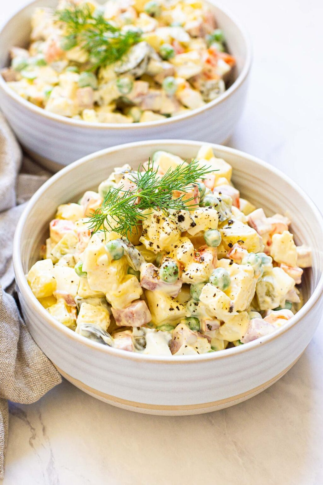

Potato Salad

Description
The are so may versions of this dish, we are going to try with the Spanish Russian Salad kind of tapas dish
We will use a yummy mayo we like, so feel free to get yours from the supermarket or, if feeling adventurous, make your own
Ingredients
- Potatoes, boiled and chopped into cubes
- One can of tuna
- Green olives, a bag about 75grms
- Two boiled egg, chopped
- One can of peas
- One large carrot, boiled and chopped
- One tin of white asparagus
Steps
- After boiling potatoes and carrot, drain and put all ingredients together except from asparagus
- Season with some salt if necessary
- Pour mayonnaise as much as you like, some prefer loads of mayo, some little, that is your choice, I like mine with loads!
- Now it's time to decorate the top with some asparagus
- Cover wit some foil so mayo doesn't go yellowish and keep in the the fridge when you're not having any